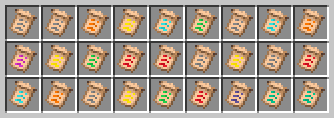
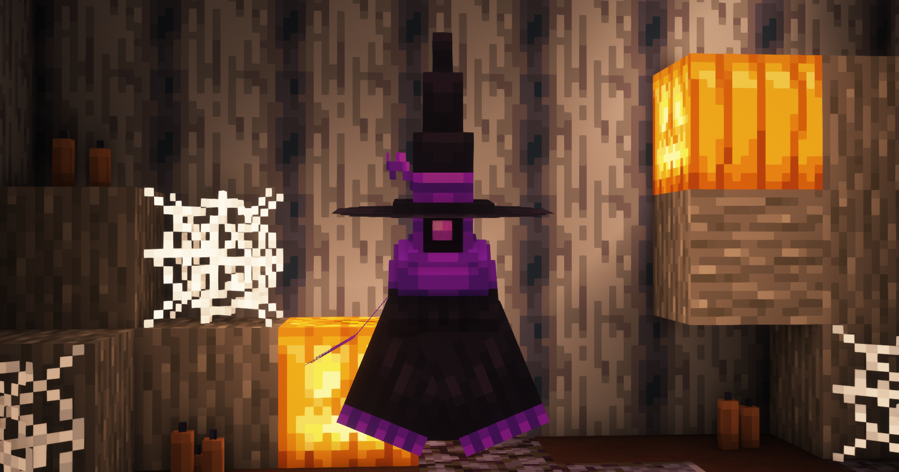

NOTA DE ATUALIZAÇÃO AUSTV
Aposto que você já passou por muita história por aqui. Recentemente, precisamos de mais apoio e mais jogadores em nosso servidor. Por isso, resolvemos fazer uma imensa e grande reformulação no servidor, baseado no que a comunidade exigiu e avaliou sobre nós.
IMPLEMENTAÇÕES
Pergaminhos divididos
O visual dos pergaminhos abertos agora são coloridos baseados nas suas categorias de raridade, fazendo com que eles possam ser vistos mais facilmente.
Antes
Depois
Monotonia em guerras
Para evitar guerras paradas com poucos clãs, teremos algumas mudanças:
- As guerras entre os servidores terão horários diferentes. Henesys passa a ser 17h.
- Administradores podem participar se a guerra estiver vazia, em clãs sozinhos e sem aliança.
- Ambas as guerras de sábado e domingo vão entregar troféu no Henesys.

Novo troféu da guerra da Rocinha


Momentos lendários de antigas guerras que queremos de volta
Balanceamento e monotonia
Para criar uma dinâmica maior e jogadores precisarem sempre buscar novos encantamentos e estratégias, fizemos:
- Encantamentos "inúteis" servirão como requisitos para outros.
- De tempos em tempos, um conjunto de encantamentos serão desligados, forçando jogadores a trocarem em um ciclo que se repete.
- Uma história acompanha cada ciclo, para criar imersão.
Experiência na caixa dos deuses
Depois de muitas tentativas, a única solução encontrada será a adição da coleção Deuses, o pack que estará disponível na caixa dos deuses, com rework visual.
Map art automática
Jogadores agora podem inserir map-arts através da nossa loja, resolvendo aquela questão que estavam pedindo mundos separados para criar mapas.

Exemplo de mar art inserida
Pets
A tão sonhada atualização dos pets chegou. Com pets customizados, habilidades incríveis e níveis para serem conquistados, os pets são um sistema incrível no Henesys e Skyten.

Pets de Halloween
Difícil aprendizado
Contaremos com um tutorial interativo, com ramificações e recompensas para os jogadores novatos aprenderem a jogar e entender os servidores Henesys e Skyten, além de acelerar a fase inicial.
Melhor experiência no Skyten
O servidor passa a ter ligação entre diversas áreas para uma jogabilidade mais divertida.
- Bosses em dungeons passam a dropar itens novos (criados por nós).
- Esses itens são usados para construir coisas incríveis.
Henesys RPG
Vamos criar vida ao RPG de Henesys, melhorando aspectos antigos.
- NPCs vivos pelo spawn que interagem.
- Modo história com diálogos e sequências incríveis.
- Missões desafiadores que recompensam com itens únicos.
Novidades no combate
Incentivar e ter mais horários de eventos combate com clãs ou cooperativos:
- Volta do evento duplinhas.
- Criação do evento triozinhos.
- Combate de clãs: formato duelo contudo contra clãs 4x4.
Cosméticos no Vanillew
Recebam a customização do seu personagem. Crie vida e experiente novos cosméticos. Como não altera a jogabilidade/economia, esse sistema será adicionado no Vanillew.

Cosméticos do Henesys que agora terão no Vanillew
Estatísticas após um evento
Auseventos que possuem combate agora salvam estatísticas do evento, enviando ao Discord para todos consultarem seus resultados e guardar.

Estatística de um evento Flechada normal
Melhorias gerais
Não vamos deixar de comentar sobre:
- Novo visual para o passe de batalha de Henesys que estava muito confuso.
- Combate mais competitivo: limite de CPS aumentado para 20.
- Banners explicativos de como jogar.
- Lobby decente e não quebrado.
- Mais objetivos de metas no Henesys com recompensas e emblemas de conclusão.
- Remoção de itens que possam ser ruim de farmar na economia rotativa.
GERENCIAMENTO
Falta de foco no mais importante
Pedimos desculpas pela demora para resolver problemas milenares como o clã ff. A partir de agora, nossa forma de organização será em cima do mais prioritário, não deixando a comunidade na mão.
STAFF participativa
Aumentaremos a interação com a STAFF dentro do jogo:
- Eventos diferentes, fora do horário.
- Conversas interativas no spawn.
- Charadas e drops.
- Desafios contra a STAFF.
- Entre várias outras interações.
FEITO PARA COMUNIDADE
Demora na implementação de promessas
Para não deixar a comunidade na mão e fazer o povo ter mais voz:
- A comunidade que dá as ideias para os eventos sazonais através do Discord.
- Ideias aprovadas são recompensadas.
- As datas são definidas pela STAFF para não deixar jogadores na mão e esperarem por algo chegar por tempo inderteminado.

Fórum do Discord que usamos para isso
Falta de atenção da STAFF com problemas da comunidade
Sentimos que a comunidade está insatisfeita pela forma que lidamos com problemas. Por conta disso, todos os administradores participarão ativamente de discussões e resolveremos todos os problemas que a comunidade julgar pendente e importante. O foco são vocês.
Demora da implementação de boas sugestões
Suas boas sugestões serão implementadas com mais rapidez. Além disso, mudamos nossa forma de pensar:
- Todo mês, uma grande sugestão será escolhida para ser implementada. A pessoa será recompensada.
- Sugestões mais simples serão implementadas e quem sugeriu será marcado na nota de atualização.
Valorização dos melhores
Todo mês, jogadores são exibidos em banners no Discord para toda a comunidade ver. Agradecemos muito esses jogadores, que se dedicaram ao longo de todo o mês.
Exemplo do mês passado apenas para doador
MARKETING
Comunidade escolhe o criador
Agora o marketing será feito todo mês sem parar. Mas, além disso, a cada 3 meses teremos uma votação exclusivamente da comunidade para dedicir um criador de conteúdo (qualquer um, que possa ser contratado) para divulgar o servidor. A votação será afunilada até um vencedor. A escolha do criador é 100% da comunidade e nós da STAFF iremos contratar a pessoa (se for possível).
Criadores de conteúdo
Os criadores de conteúdo receberão mimos para incentivá-los e compensação financeira. Eles serão pagos em dinheiro.
- Dinheiro real distribuído para todos os criadores de conteúdo que bateram metas.
- Banner top 3 criadores mensais.
- Pelúcia gigante conquistada no último nível.
- Melhorias nos kits.
- Algumas alterações na pontuação.
Conteúdo dedicado
Ajudantes trabalharão para criar conteúdos dedicados e padronizados, que assemelham às produções de grandes servidores, como Hypixel, Realms, etc. Veja o exemplo abaixo.
STAFF
Melhoria de comportamento
O último formulário serviu para mostrar aos administradores os pontos fracos para serem melhorados. Sabemos que uma parte da comunidade antiga está insatisfeita pela forma que foi levado a administração do servidor nos últimos tempos.
Por conta disso, a administração se reuniu e firmou um novo comportamento. Os pontos fracos de cada administrador será trabalhado para uma melhoria. Pedimos que os antigos jogadores possam deixar pendencias do passado para trás e nos ajudar em uma nova era e fase de mudanças.

Uma foto para relembrar como o Waka é top
CONCLUSÃO
Com isso, chegamos ao fim da nossa reformulação. Esperamos que todos os antigos jogadores possam se sentir à vontade para voltar ao servidor e construírmos juntos uma nova época de ouro. Foram incontáveis momentos de diversão e emoção, fofocas pelo chat e aventuras que vivemos lado a lado. Esses tempos foram mais do que uma simples conexão a um servidor, foram memórias que guardaremos para sempre, cada uma delas cheia de significado.
Este é um recomeço, mas também uma celebração de tudo que construímos juntos. É um convite para que voltemos a criar novas histórias e laços de amizade. Esse momento marca o início de uma nova fase, onde podemos reviver tudo o que já foi especial e criar ainda mais momentos que fiquem para sempre guardados.
A todos que fizeram parte dessa jornada e àqueles que ainda estão por vir, obrigado. Vamos juntos transformar o servidor em um lugar onde sempre que entrarmos, estaremos voltando para casa.